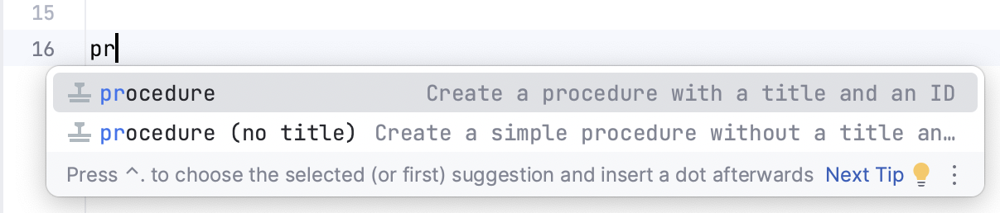
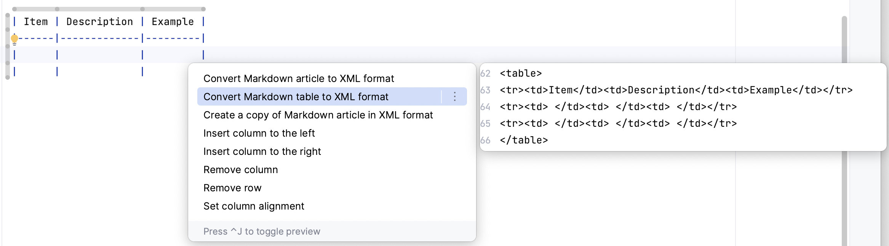

Приложение состоит из Ядра (core), системной части (system-app) и бизнесс логики (public-app)
Write content
Writerside supports two types of markup: Markdown and XML. When you create a new help article, you can choose between two topic types, but this doesn't mean you have to stick to a single format. You can author content in Markdown and extend it with semantic attributes or inject entire XML elements.
Inject XML
For example, this is how you inject a procedure:
Inject a procedure
Start typing and select a procedure type from the completion suggestions:

Press Tab or Enter to insert the markup.
Add interactive elements
Tabs
To add switchable content, you can make use of tabs (inject them by starting to type tab on a new line):
Apart from injecting entire XML elements, you can use attributes to configure the behavior of certain elements. For example, you can collapse a chapter that contains non-essential information:
Supplementary info
Content under a collapsible header will be collapsed by default, but you can modify the behavior by adding the following attribute: default-state="expanded"
Convert selection to XML
If you need to extend an element with more functions, you can convert selected content from Markdown to semantic markup. For example, if you want to merge cells in a table, it's much easier to convert it to XML than do this in Markdown. Position the caret anywhere in the table and press Alt+Enter:

Feedback and support
Please report any issues, usability improvements, or feature requests to our YouTrack project (you will need to register).
You are welcome to join our public Slack workspace. Before you do, please read our Code of conduct. We assume that you’ve read and acknowledged it before joining.